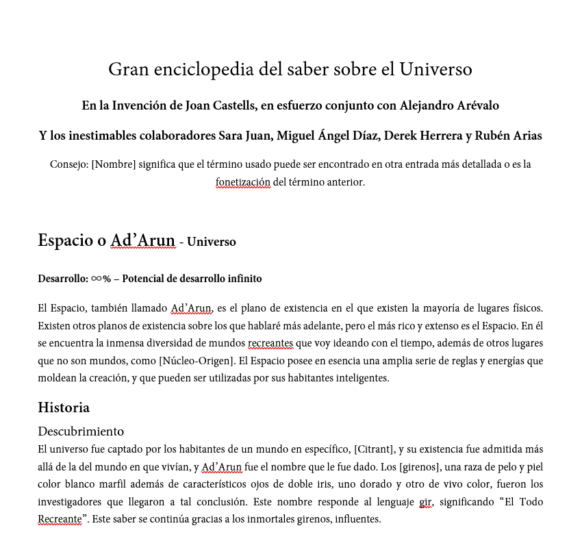
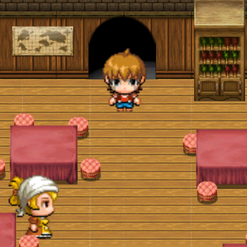

Destacados del Portfolio


La Gran Enciclopedia del Saber Sobre el Universo
Escritura - Estudio de Worldbuilding

"La Desgracia"
Ilustración realizada a motivo de estudio artístico de Fallout


Proyecto Gradenia
Unos primeros pasos en la producción audiovisual del sector

"El Legado del Hermano"
Una primeriza incursión en la literatura, aún en desarrollo